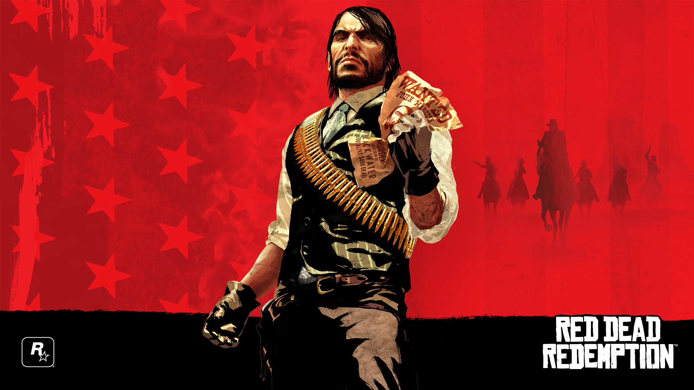
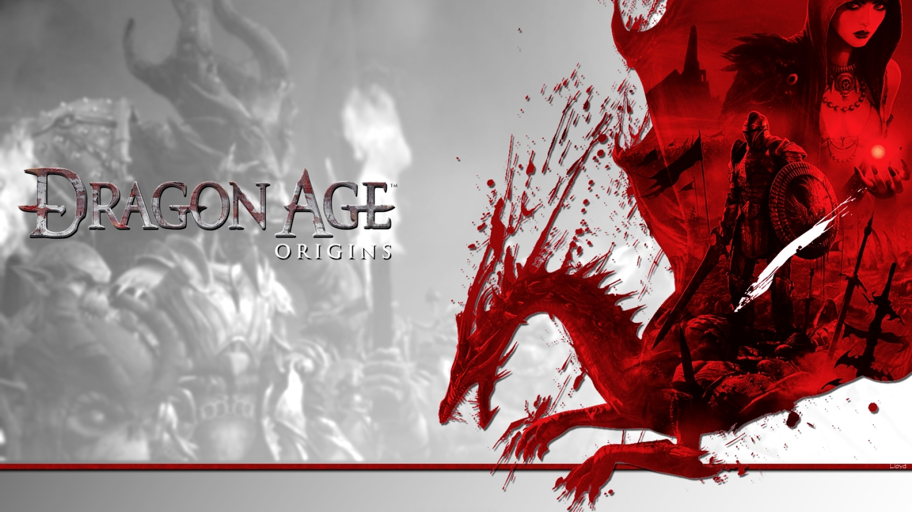
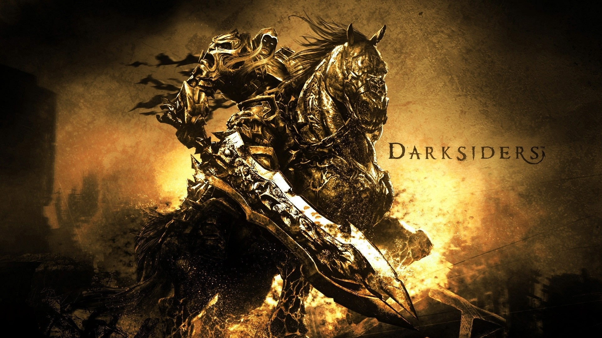
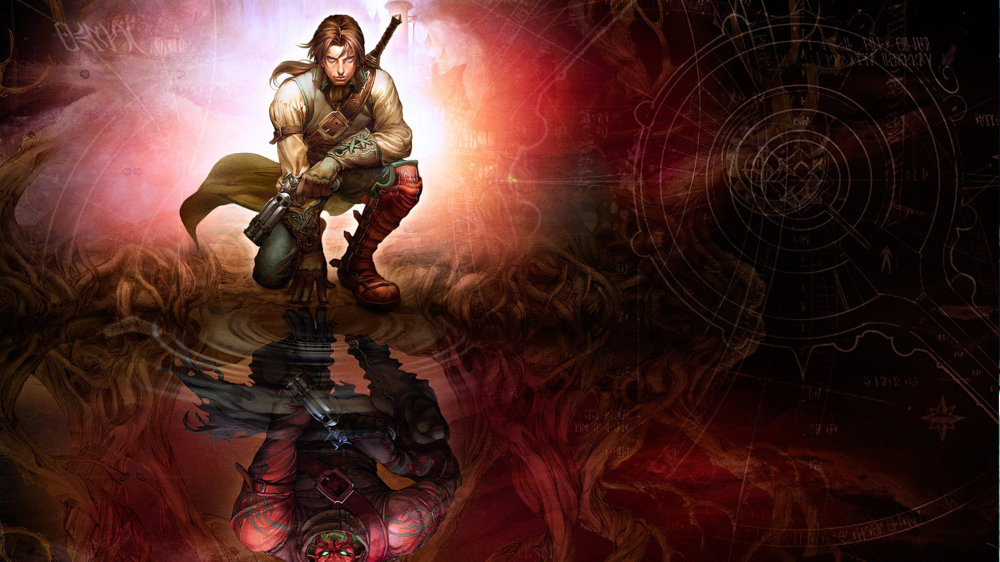
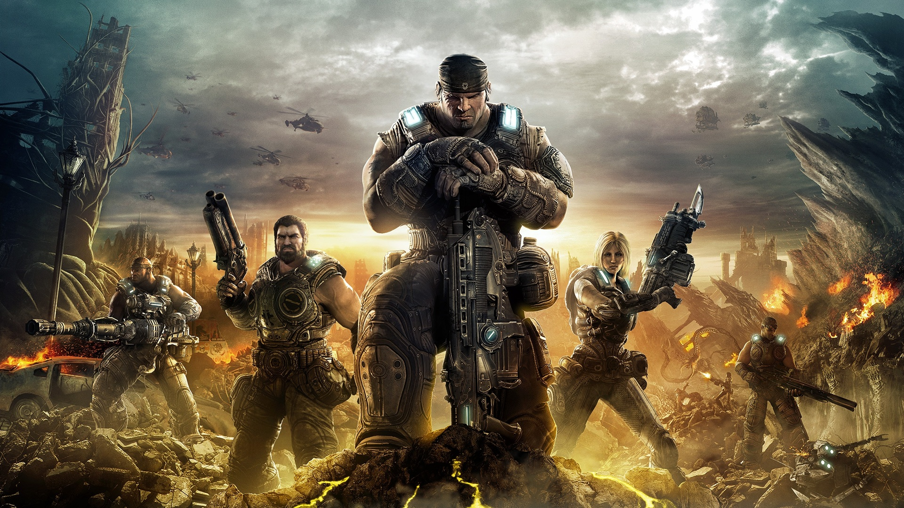

Red Dead Redemption to western, którego poprzednia część, Red Dead Revolver, ukazała się w 2004 roku na konsole Xbox i PlayStation 2. Druga część serii nie jest jednak w żadnej mierze kontynuacją, ale oddzielną historią rozgrywającą się w zupełnie innym okresie. Za stworzenie drugiej części odpowiada studio Rockstar San Diego, czyli jeden z oddziałów firmy, którą zwykliśmy kojarzyć przede wszystkim z serią Grand Theft Auto. Twórcy tej produkcji pracowali także przy wyścigach Midnight Club oraz świetnej symulacji tenisa stołowego Table Tennis.

Fantastyczny RPG z widokiem TPP wyprodukowany przez studio BioWare. Po stworzeniu bohatera i zebraniu drużyny wyruszamy w podróż po magicznej krainie Ferelden, pełnej unikalnych postaci, przedmiotów, stworów i lokacji. Gra posiada bogate podłoże fabularne, interesujący system walki, a także świetną oprawę audiowizualną. Pozycja obowiązkowa dla każdego fana RPG oraz miłośników serii Baldur’s Gate czy Icewind Dale.Dragon Age: Początek to gra cRPG stworzona w całości przez studio BioWare. Dla kanadyjskiego dewelopera projekt ten stanowi powrót do korzeni, po tym, jak w 1998 roku firma zasłynęła w świecie kultowym Baldur’s Gate, a potem wsławiła się w gatunku role-playing takimi dziełami, jak Neverwinter Nights, Knights of the Old Republic czy Mass Effect.

Gra akcji z elementami RPG, w której wcielamy się w postać Wojny, jednego z Czterech Jeźdźców Apokalipsy. Akcja oparta jest o Apokalipsę Św. Jana. Z nieznanych przyczyn nasz bohater zostaje zdradzony po czym pojawia się na placu boju pomiędzy siłami piekła i nieba, niszcząc wszystko co napotka na swojej drodze z pomocą obszernego arsenału.Fabuła nawiązuje do treści Apokalipsy św. Jana. Wcielamy się w Wojnę, jednego z zapowiedzianych przez ewangelistę Czterech Jeźdźców. Przybywa on na Ziemię, by dokonać jej zniszczenia, ale okazuje się, że został podstępnie zdradzony. W konsekwencji nasz bohater utracił większość swoich mocy. Jakby tego było mało, staje się celem piekielnych i niebiańskich ataków. Osamotniony Wojna wraca na Ziemię i wyrusza, by odzyskać zdolności, odnaleźć zaginionego rumaka i odkryć tajemnicę zdrady.

Fable 2 jest kontynuacją słynnej gry z gatunku cRPG, stworzonej przez elektroniczno-rozrywkowego mistrza w osobie Petera Molyneuxa. Demiurg ów przygotował sequel specjalnie z myślą o stacjonarnej konsoli Xbox 360. Scenariusz ponownie przenosi nas do fantastycznego Albionu, przypominającego nieco Anglię. Tym razem jednak akcja toczy się mniej więcej pięćset lat później. Upływ czasu widać przede wszystkim w budownictwie, ubiorach i uzbrojeniu (w użyciu jest np. broń palna), chociaż zmianie uległo również chociażby prawo. Generalnie wirtualne uniwersum nie przypomina już europejskiego średniowiecza, lecz raczej epokę podbojów kolonialnych.

Gears of War jest kolejnym elektroniczno-rozrywkowym przedsięwzięciem twórców bestsellerowej serii Unreal. W odróżnieniu od marki Unreal Tournament i Unreal Championship developerzy postanowili skupić się na trybie zabawy jednoosobowej, chociaż nie zaniedbano również opcji multiplayer, oferującej przykładowo interesujący system kooperacji z drużyną komandosów. Niniejszy produkt łączy najlepsze cechy gier akcji z elementami gatunku survival horror, a zatem w pewnym sensie przypomina Doom 3 i pamiętny cykl System Shock, aczkolwiek bieg wydarzeń ukazano z perspektywy trzeciej osoby.